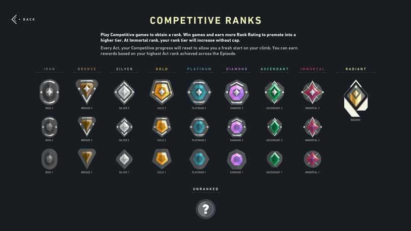

Welcome to ingame page!
Unrated and rank
The Unrated and rank are the most popular modes for players. Unrated is more relax mode than rank.
Valorant has a rank system just like all competitive FPS games.Valorant's ranked system for the most part is fairly straightforward.
There are 9 different ranks that you can achieve, and within the first 8 ranks, there are 3 different tiers. In ascending order,
these ranks are called:
Iron
Bronze
Silver
Gold
Platinum
Diamond
Ascendant
Immortal
Radiant (Previously known as Valorant)

Deathmatch
Summary
Deathmatch is a multiplayer free-for-all game mode designed to allow players to hone their gunplay mechanics or warm up before playing Competitive.
Each player loads into a random map with a random agent that they own. Players start in a brief warm-up phase before the real game starts. Players
cannot buy or use abilities but are automatically given Heavy Shields. They can buy whatever weapons they want.
Premier

Everything you want to know about premier
Swift play and Spike rush
These two modes are the most relax modes in the game.
Swift play
Swiftplay is a best-of-nine game mode in VALORANT that is available as a condensed alternative to Unrated. This is way more fater to play than unrated.
Spike rush
Spike Rush is a faster-paced game mode. Pre-round time is reduced to 20 seconds (usually 30) and game time is reduced to 80 seconds (usually 100).
While the attackers have less time to plant, they also have the advantage of each player having a spike. The game ends when one team reaches 4 round wins,
teams switch sides after 3 rounds.
Spike Rush has different mechanics than other modes.
All the details about Spike Rush on this page.